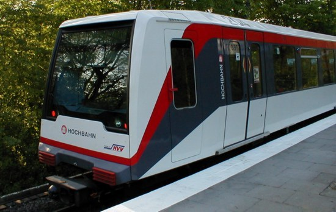

DT4

- Backride 🠆 Ja
- Länge 🠆 60,2m
- Haupteinsatz 🠆 U2, U1, seltener auf U3
Die Doppeltriebwagen 4 (DT4) sind Schienenfahrzeuge, die im Hamburger U-Bahn-Netz zum Einsatz kommen. Planmäßig fahren sie auf den Linien U1 und U2, außerplanmäßig oder bei Baustellenverkehren auch auf der U3. Die Fahrzeuge wurden schrittweise ab 1988 in Betrieb genommen.
Diese vierteiligen DT4-Züge sind bestens für Backrides, Frontrides und Zwischenrides geeignet.